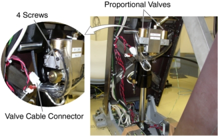
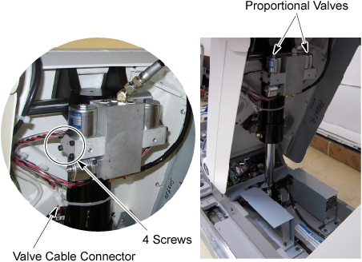

| NOTE: | A small amount of oil may leak out, but this is acceptable. |
Illustration 10: Proportional Valve Removal (GT1700, GT2000 and Global PET/CT Table)

Illustration 11: Proportional Valve Removal (Global PET/CT table, with fixed position IMS)
